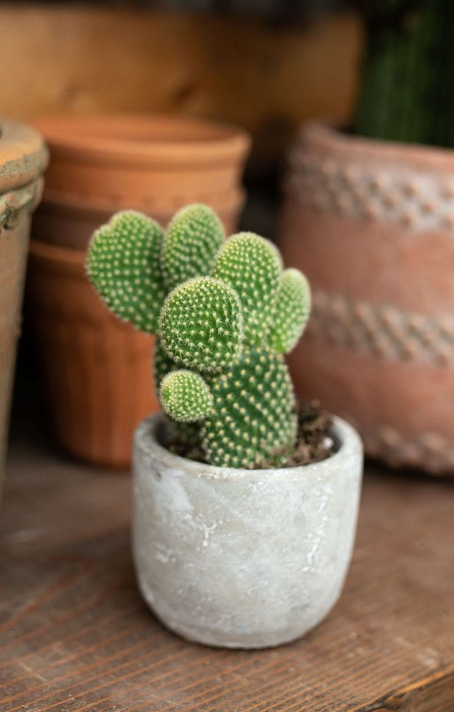

Aloe vera is also called hair aloe. Its scientific name is Aloe barbadensis. A succulent (fleshy) plant that is easy to raise and reaches a growth of approximately 45 cm. It grows in dry areas in most parts of the world. Its leaves are sharp-edged and there are several types. The plant is grown for beautification in rock gardens or alone.
The juice is used to treat burns. Especially burns caused by prolonged exposure to the sun. Where a piece of it is taken and broken and the resulting liquid is placed from the fracture site. On the affected area, the pain is greatly reduced. It is also grown to take advantage of its liquid for hair care.